Chapter 24 Application of the Instrumental Variable Method: Fuzzy Regression Discontinuity
The regression discontinuity method introduced in Chapter 20 and the IV method introduced in Chapters 21–23 are two important examples of natural experiments. The study designs are not as ideal as randomized experiments in Part II, but they have features similar to randomized experiments. That’s why they are called natural experiments.
Compounding the regression discontinuity method with the IV method yields the fuzzy regression discontinuity method, another important natural experiment. I will start with examples and then provide a mathematical formulation.
122 Motivating examples
Chapter 20 introduces the regression discontinuity method. The following three examples are slightly different because the treatments received are not deterministic functions of the running variables. Rather, the running variables discontinuously change the probabilities of the treatments received at the cutoff points.
Example 24.1
In 2000, the Government of India launched the Prime Minister’s Village Road Program, and by 2015, this program had funded the construction of all-weather roads to nearly 200,000 villages. Based on village-level data, Asher and Novosad, (2020) use the regression discontinuity method to estimate the effect of new feeder roads on various economic variables. The national program guidelines prioritized larger villages according to arbitrary thresholds based on the 2001 Population Census. The treatment variable equals 1 if the village received a new road before the year in which the outcomes were measured. The difference between the population size of a village and the threshold did not determine the treatment variable but affected its probability discontinuously at the cutoff point 0.
Example 24.2
Li et al., (2015) used the data on the first-year students enrolled in 2004 to 2006 from two Italian universities to evaluate the causal effect of a university grant on the dropout rate. The students were eligible for this grant if their standardized family income was below 15,000 euros. For simplicity, we use the running variable defined as 15,000 minus the standardized family income. To receive this grant, the students must apply first. Therefore, the eligibility and the application status jointly determined the final treatment status. The running variable alone did not determine the treatment status although it changed the treatment probability at the cutoff point 0.
Example 24.3
Amarante et al., (2016) estimated the impact of in-utero exposure to a social assistance program on children’s birth outcomes. They used a regression discontinuity induced by the Uruguayan Plan de Atención Nacional a la Emergencia Social. It was a temporary social assistance program targeted to the poorest 10 percent of households, implemented between April 2005 and December 2007. Households with a predicted low-income score below a predetermined threshold were assigned to the program. The predicted income score did not determine whether the mother received at least one program transfer during the pregnancy but it changed the probability of the final treatment received. The birth outcomes included birth weight, weeks of gestation, etc.
123 Mathematical formulation
Let  denote the running variable which determines
denote the running variable which determines
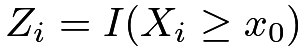 |
with the cutoff point  . The treatment received
. The treatment received  may not equal
may not equal  , but
, but
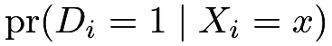
has a jump at. Figure 37 compares the treatment received probabilities of the sharp regression discontinuity and fuzzy regression discontinuity. It shows a special case of fuzzy regression discontinuity with 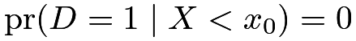
, which is coherent to Example 24.2.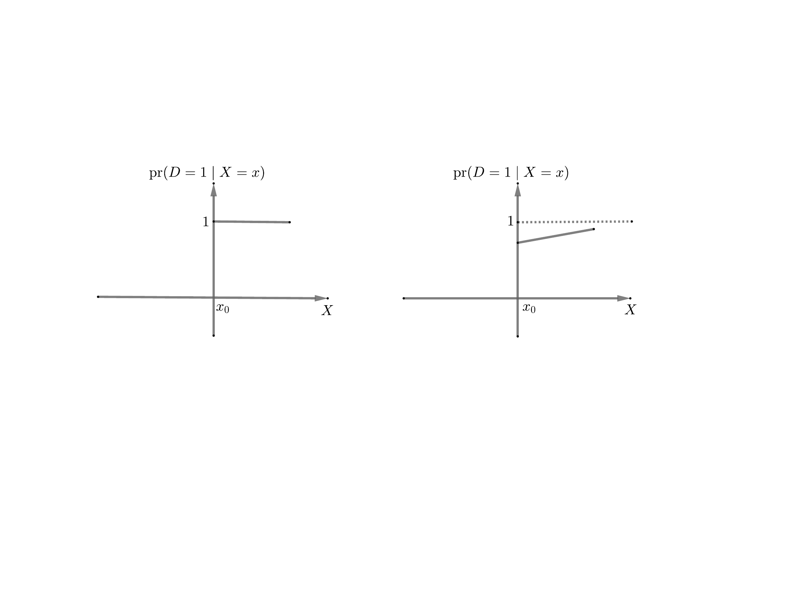
Let  denote the outcome of interest. Viewing as the treatment assigned, we can define potential outcomes
denote the outcome of interest. Viewing as the treatment assigned, we can define potential outcomes
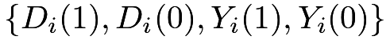
. The sharp regression discontinuity of allows for the identification of
allows for the identification of
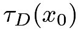 |
 |
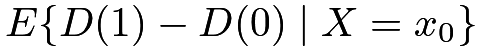 |
||
|
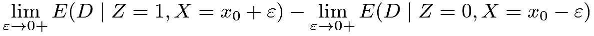 |
and
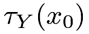 |
|
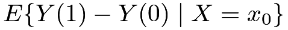 |
||
|
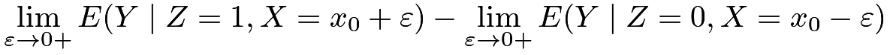 |
based on Theorem 20.2.
Using as an IV for  and imposing the IV assumptions at
and imposing the IV assumptions at  , we can identify the local complier average causal effect by applying Theorem 21.1.
, we can identify the local complier average causal effect by applying Theorem 21.1.
Theorem 24.1
Assume that the treatment is determined by  where is a predetermined threshold.
Assume monotonicity
where is a predetermined threshold.
Assume monotonicity
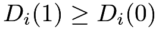 |
and exclusion restriction
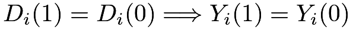 |
in the infinitesimal neighborhood of . The local complier average causal effect, defined as
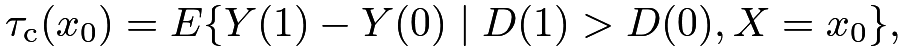 |
can be identified by
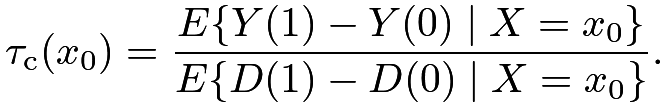 |
Further assume that 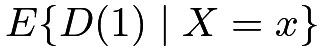 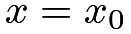 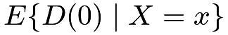 are continuous from the right at
are continuous from the right at  are continuous from the left at .
The local complier average causal effect can be identified by
are continuous from the left at .
The local complier average causal effect can be identified by
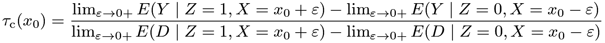 |
if 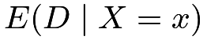
In both sharp and fuzzy regression discontinuity, the key is to specify the neighborhood around the cutoff point. Practically, a smaller neighborhood leads to a smaller bias but a larger variance, while a larger neighborhood leads to a larger bias but a smaller variance. That is, we face a bias-variance trade-off. Some automatic procedures exist based on some statistical criteria, which rely on some strong conditions. It seems wiser to conduct sensitivity analysis over a range of the choice of the neighborhood.
Assume that we have specified the neighborhood of determined by a bandwidth  .
For data with
.
For data with
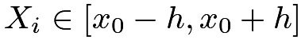
, we can estimate by
by
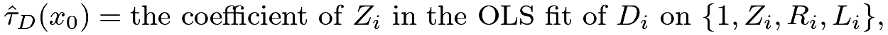 |
and estimate 
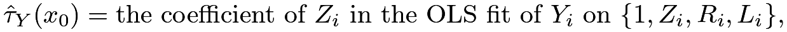 |
recalling the definitions
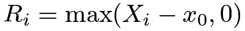
and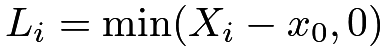
. Then we can estimate the local complier average causal effect by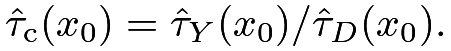 |
This is an indirect least squares estimator. By Theorem 23.1, it is numerically identical to
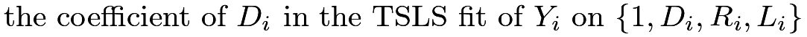 |
with instrumented by . In sum, after specifying , the estimation of
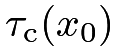
reduces to a TSLS procedure with the local data around the cutoff point.124 Application
124.1 Re-analyzing Asher and Novosad, (2020)’s data
Revisit Example 24.1. We can compute the point estimates and standard errors for a sequence of based on the outcome occupation_index_andrsn.
Figure 38 shows the results. The treatment effect is not significant unless is large.
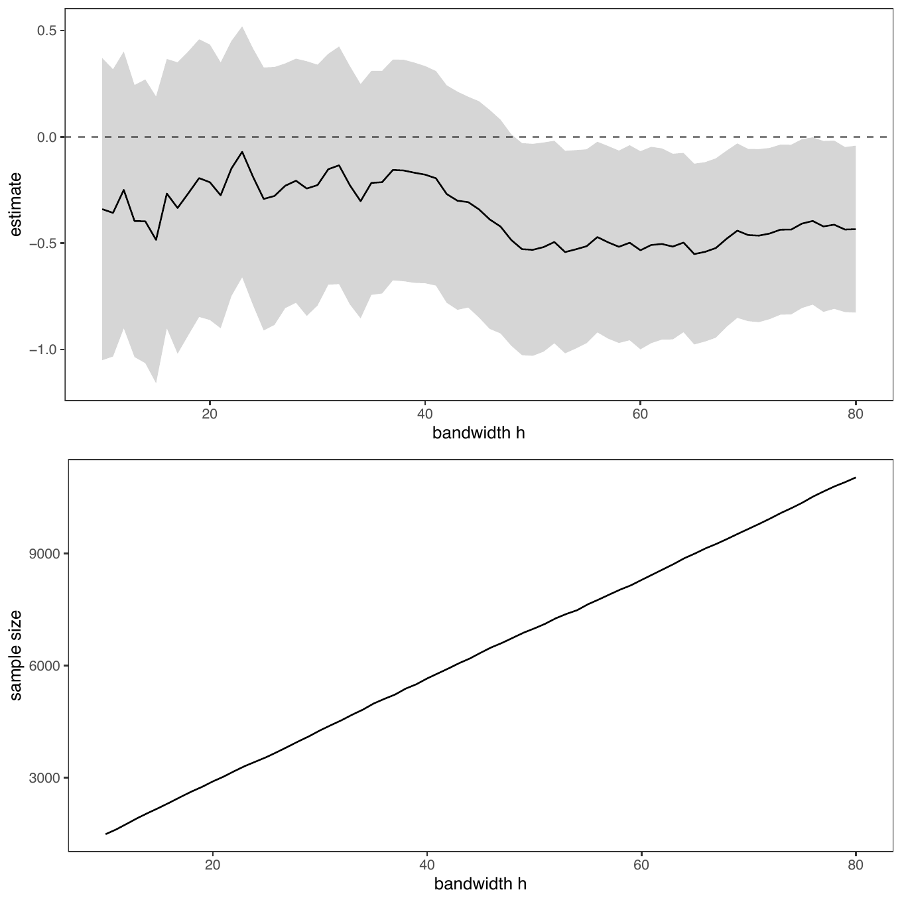
The package rdrobust selects the bandwidth automatically. The results suggest that receiving a new road did not affect the outcome significantly.
124.2 Re-analyzing Li et al., (2015)’s data
Revisit Example 24.2. Recall that the running variable is 15,000 minus the standardized income. In the analysis, I restrict the data to a subset with this running between
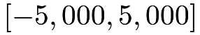
, and then divide the running variable by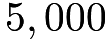
so that the running variable is bounded between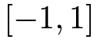
at cutoff point zero. We can compute the point estimates and standard errors for a sequence of.
Figure 39 shows the results and suggests that the university grant did not affect the dropout rate significantly.
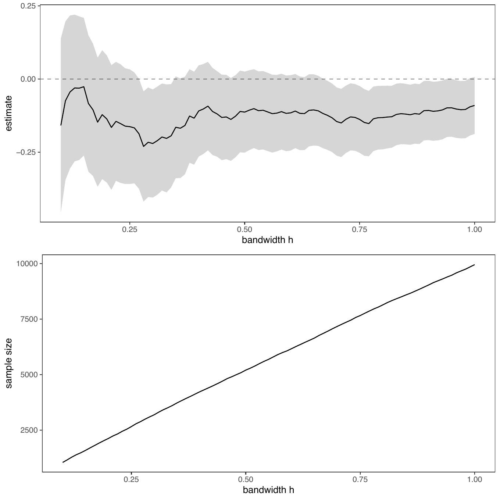
The results based on the package rdrobust reach the same conclusion.
125 Discussion
Both Chapter 20 and this chapter formulate regression discontinuity based on the continuity of the conditional expectations of the potential outcomes given the running variables. This perspective is mathematically simpler but it only identifies the local effects precisely at the cutoff point of the running variable. Hahn et al., (2001) started this line of literature.
An alternative, not so dominant perspective is based on local randomization (Cattaneo et al.,, 2015; Li et al.,, 2015). If we view the running variable as a noisy measure of some underlying truth and the cutoff point is somewhat arbitrarily chosen, the units near the cutoff point do not differ systematically. This suggests that in a small neighborhood of the cutoff point, the units receive the treatment and the control in a random fashion just as in a randomized experiment. Similar to the issue of choosing in the first perspective, it is crucial to decide how local should the randomized experiment be under the regression discontinuity. It is not easy to quantify the intuition mathematically, and again conducting sensitivity analysis with a range of seems a reasonable approach in the second perspective as well.
See Sekhon and Titiunik, (2017) for a more conceptual discussion of regression discontinuity.
126 Homework Problems
24.1 Proof of Theorem 24.1
Prove Theorem 24.1.
24.2 Data analysis
Section 124.1 reports the estimate of the effect on occupation_index_andrsn. Four other outcome variables are transport_index_andrsn, firms_index_andrsn, consumption_index_andrsn, and agriculture_index_andrsn, with meanings defined in the original paper. Estimate the effects on these outcomes.
24.3 Reflection on the analysis of Li et al., (2015)’s data
In Li et al., (2015), a key variable determining the treatment status is the binary application status  , which has potential outcomes
, which has potential outcomes
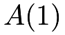
and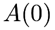
corresponding to the treatment and control
and control  . By definition,
. By definition,
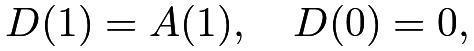 |
so the compliers
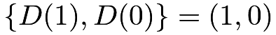
is equivalent to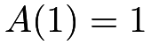
. So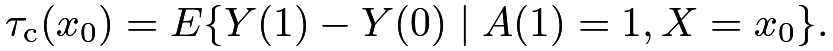 |
Section 124.2 used the whole data set to estimate .
An alternative analysis is to use the units with only. Then the treatment status is determined by  . However, this analysis can be problematic because
. However, this analysis can be problematic because
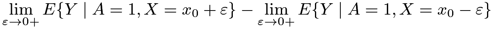 |
(121) | ||||
|
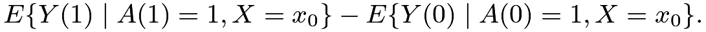 |
Prove (121) and explain why this analysis can be problematic.
Remark:
The left-hand side of (121) is the identification formula of the local average treatment effect at , conditional on . The right-hand side of (121) is the difference in means of the potential outcomes for the subgroups of units with
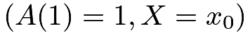
and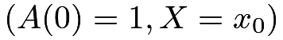
, respectively. See Chapter 26 later for related discussions.24.4 Recommended reading
Imbens and Lemieux, (2008) gave practical guidance to regression discontinuity based on the potential outcomes framework. Lee and Lemieux, (2010) reviewed regression discontinuity and its applications in economics.